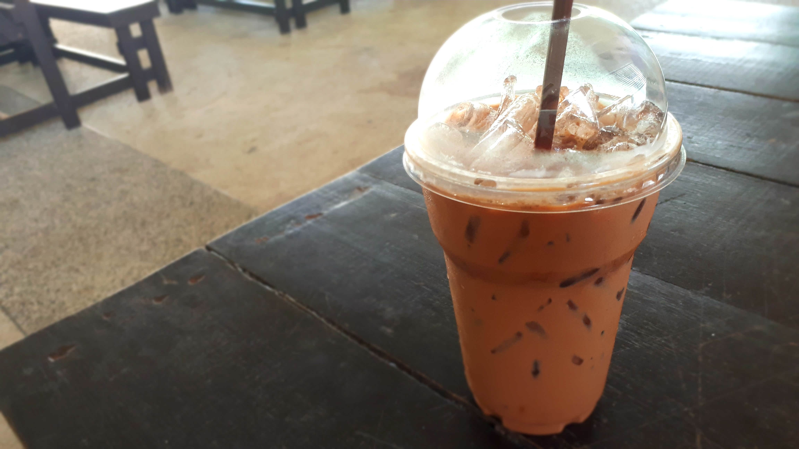
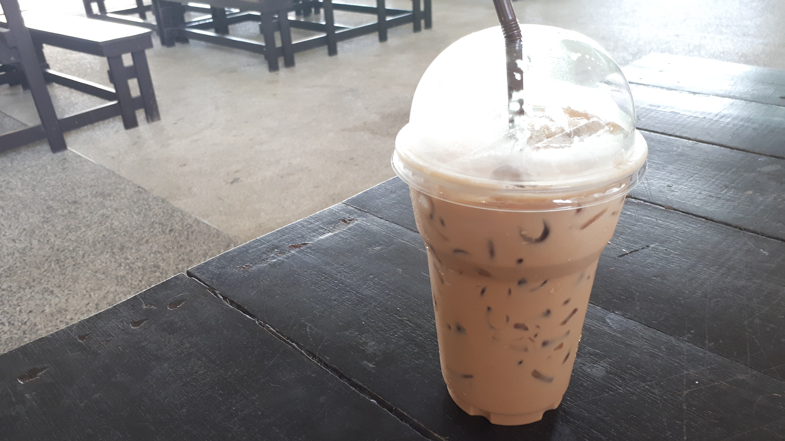
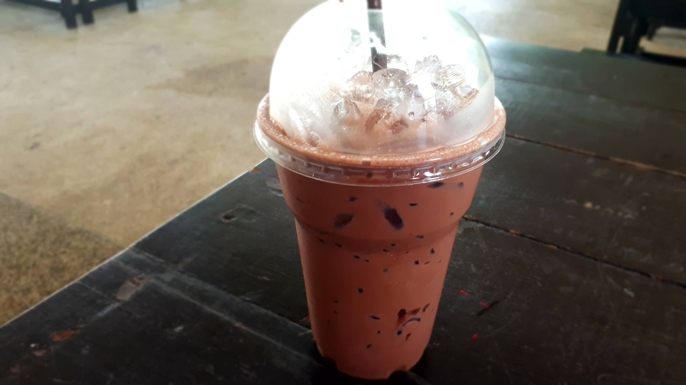

กาแฟแก้วโปรดที่วางอยู่ตรงหน้า ไม่ว่าจะเป็นร้อนหรือเย็น อะไรน้อ…เป็นตัวจุดชนวนให้เกิดอาการอยากดื่มแต่ที่แน่ๆ เมื่อได้กลิ่นโดยมาเมื่อไหร่ เป็นอันยั่วน้ำลายได้ทุกที วันนี้ มาดูกันว่า อะไรกันแน่คือเสน่ห์ที่ทำให้เราอยากดื่มกาแฟ
กลิ่น Aroma:กาแฟที่มีกลิ่นหอมยั่วน้ำลายให้คนอยากดื่มไปกว่าครึ่ง กลิ่นที่ว่านี้เกิดจากการเผาไหม้ของเมล็ดกาแฟที่เกิดจากการคั่วระดับการคั่วที่เข้มเท่าใด กาแฟก็ยิ่งส่งกลิ่นของถ่านมากขึ้นเท่านั้น
เนื้อกาแฟ Body:ความเต็มปากเต็มคำของกาแฟ การดื่มกาแฟแต่ละครั้งนอกจากกลิ่นหอมจะเป็นตัวดึงดูดแล้ว เนื้อกาแฟก็เป็นด่านต่อไปที่จะตรึงให้คนดื่มยังอยู่กับแฟถ้วยเดิมสัมผัสได้เองจากลิ้นและความรู้สึกเวลาดื่มเข้าไปว่าได้เนื้อกาแฟเต็มปากเต็มคำน้อยแค่ไหน เทียบง่ายๆ กับเนื้อของนมสด เวลาเราดื่มของหลายๆ ยี่ห้อ เนื้อของนมจะเข้มข้นไม่เท่ากันฉันใด เนื้อกาแฟเป็นแฉก เช่นเดียวกันฉันนั้น
ความเปรี้ยว Acidity:การดื่มให้ถูกต้องตามหลักแล้วต้องสูดน้ำแบบที่ฝรั่งเรียกว่า สเลิร์ป (slurp) ซึ่งหมายถึง การสูดน้ำกาแฟเข้าไปพร้อมอากาศและมีเสียงดังออกมาด้วยจากนั้นกักไว้ที่กระพุ้งแก้ม เพื่อให้ออกรสเปรี้ยวหน่อยๆ แต่ไม่ต้องปรี้ยวมาก เอาพอให้สัมผัสได้ว่ามีรสเปรี้ยวแล้วค่อยกลืน
รสชาติ Flavor:เป็นบทสรุปของสามข้อข้างต้นเป็นการผสมผสานของกลิ่น ความเข้มข้นและความเปรี้ยว รวมกันเป็นหนึ่งเดียว แล้วประมวลออกมาเป็นรสชาติว่ากลมกล่อมนุ่มนวล จืดชืด หรือว่างเปล่า ทั้งนี้รสชาติของกาแฟก็แล้วแต่รสนิยมของแต่ละคน ว่าชอบเข้มข้น หรือว่า กลมกล่อมกันขนาดไหน
เอสเปรสโซ่ Espresso:เป็นกาแฟที่เข้มข้นที่สุดเท่าที่กาแฟจะพึงเข้มข้นได้ ชงผ่านเครื่องเอสเปรสโซ่ โดยใช้แรงดันน้ำผ่านเนื้อกาแฟบดทำให้ได้กาแฟที่เข้มข้นทั้งสีและรสชาติ เสริ์ฟมาในถ้วยขนาดเล็กเพียง 2 ออนซ์ ภายในมีปริมาณน้ำกาแฟ 1-1.5 ออนซ์ ลอยหน้าด้วยฟองกาแฟสีทองที่เรียกว่า crema อันเป็นสัญลักษณ์ การันตีว่าเป็นกาแฟนเอสเปรสโซ่ที่ชงได้อย่างวิเศษที่สุด
คาปูชิโน่ Cappuccino:เป็นการผสมผสานระหว่างเอสเปรสโซ่ นมร้อน และฟองนม เสริ์ฟมาในแก้วปากกว้าง ขนาด 6 ออนซ์ ที่มีฟองนมหนานุ่มลอยหน้า เมื่อยกคาปูชิโน่ขึ้นซดน้ำกาแฟละมุน ที่หอมและมันด้วยรสนมจะแทรกกผ่านฟองนมหนานุมละเมียด ที่ลอยฟ่องอยู๋เหนือปากถ้วย เมื่ออมไว้สักครู่ จะได้กลิ่น และกาแฟผสมในนมใรรสชาติที่ชวนหลงใหล
ลาเต้ Latte:เป็นกาแฟผสมระหว่างนมที่มีรสและกลิ่นกาแฟน้อยที่สุด โดยเน้นที่นมร้อนมากกว่าปริมาณกาแฟ ปิดหน้าด้วยฟองนม และโรยผง อบเชย หรือช็อคโกแลตเล็กน้อย คนชงหรือบ้ารีสต้าที่มีศิลปะมักจะใช้ฟองนมและเนื้อกาแฟลากเป็นลวดลายบนถ้วยกาแฟ
มอคค่า Mocha:กาแฟผสมช็อกโกแลตและนมร้อน เสริ์ฟมาในแก้วทรงสูง ช็อตโกแลตที่นำมาเติมในกาแฟใช้ได้ทั้งแบบช็อตโกแลตผง ช็อตโกแลตหวาน และน้ำเชื่อม ช็อตโกแลต เวลาดื่มจะได้กลิ่นหอมของกาแฟ คละเคล้ากับรสหวานหอมของน้ำเชื่อมช็อตโกแลตและความนุ่มนวลกลมกล่อมของนมร้อน